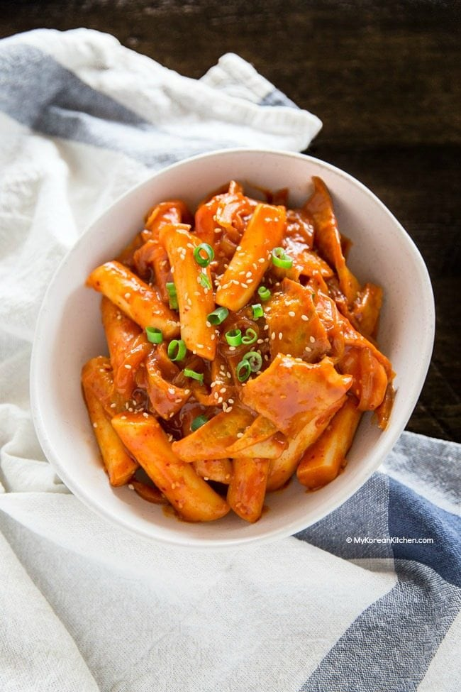

Tteokbokki

Description
A very popular street food staple in Korea, Tteokbokki is a very simple dish consisting of rice cakes and fish cakes stirred together in a slightly sweet, spicy sauce. You can find this dish on almost street food stall
Ingredients
- 350g ounces Korean rice cakes, separated
- 150g ounces Korean fish cakes, rinsed over hot water & cut into bite size pieces
- 2 cups Korean soup stock (dried kelp and dried anchovy stock)
- 60g / 2 ounces onion, thinly sliced
- 3 Tbsp gochujang (Korean chili paste)
- 1 1/2 Tbsp raw sugar
- 1 Tbsp soy sauce
- 1 tsp minced garlic
- 1 tsp gochugaru (Korean chili flakes)
- 1 tsp roasted sesame seeds
- 1 tsp sesame oil
- 1 stalk green onion, finely chopped
Steps
- Unless your rice cakes are soft already, soak them in warm water for 10 mins.
- Boil the soup stock in a shallow pot over medium high heat and dissolve the tteokbokki sauce by stirring it with a spatula. Once the seasoned stock is boiling, add the rice cakes, fish cakes and onion. Boil them a further 3 to 5 mins until the rice cakes are fully cooked. Then, to thicken the sauce and to deepen the flavor, simmer it over low heat for a further 2 to 4 mins.
- Add the sesame oil, sesame seeds, and green onion then quickly stir. Serve warm.